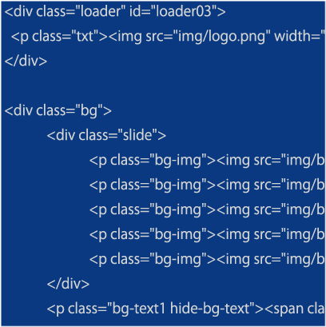

1995年生。愛知県出身。
大学卒業後、3DCADの技術支援及びオペレーターの仕事に従事。主に客先常駐での技術サポート業務を行う。
その後、製造業界の専門商社で情報システム部に所属し、基幹システムや社内グループウェアの管理、EDI（データ受発注）システムの開発・運用、社内ネットワーク環境の構築などの業務にあたる。同社ではその他、採用や総務の業務まで幅広く経験。
前職でクライアント側の立場として携わったHPリニューアルの企画で、webサイトの制作に関心を持ち、webデザイン科の職業訓練に通う。
About
Works
Skills
Design
adobeのツールを用いて、バナー、ワイヤーフレーム、デザインカンプなどの制作ができます。
使用ツール：Photoshop、Illustrator、Xd
Coding

html、cssを記述し、webサイトの制作ができます。css、Java ScriptやjQueryプラグインを用いて、サイトに動きをつけることができます。
使用ツール：Dreamweaver、VScode
Others

Office系ソフトで資料の作成ができます。
DataSpiderでプログラム開発を行い、mySQLおよびSQL Serverの言語も少し扱いました。
3DCADでは、Solidworks、NXの使用経験があります。
使用ツール：Word、Excel、Powerpoint、Dataspider、Solidworks、NX